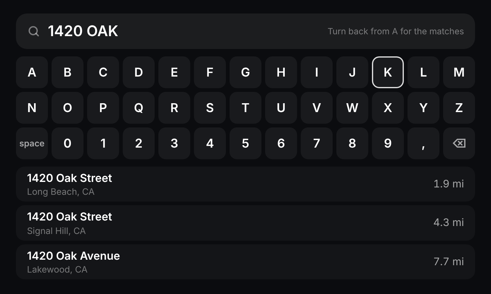
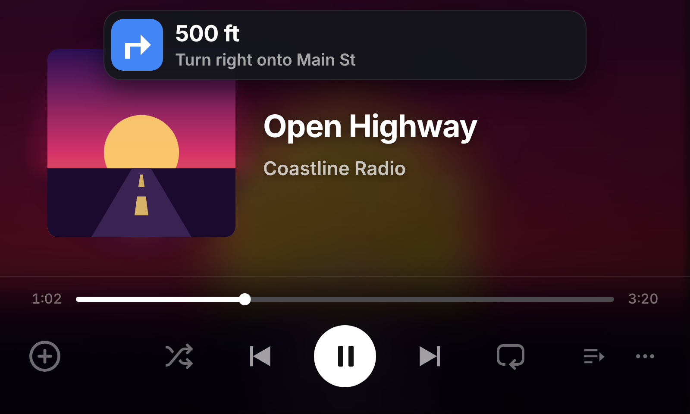
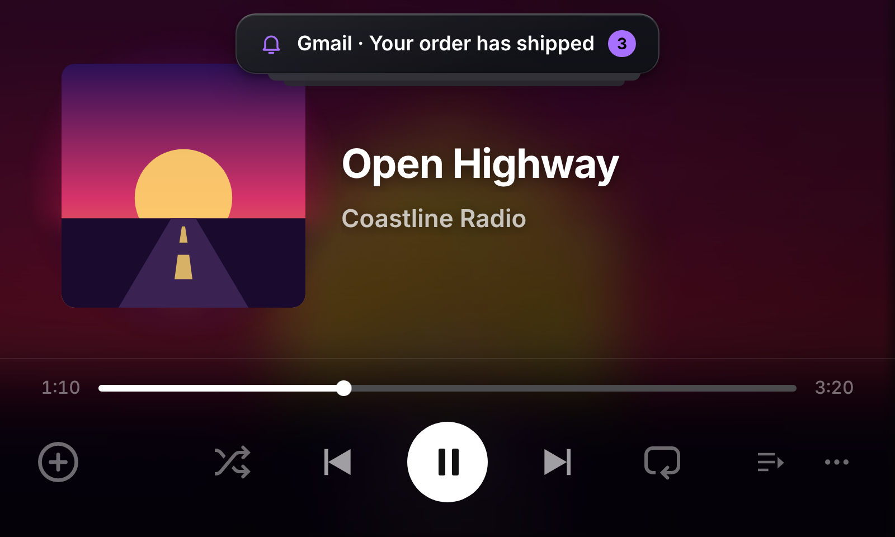
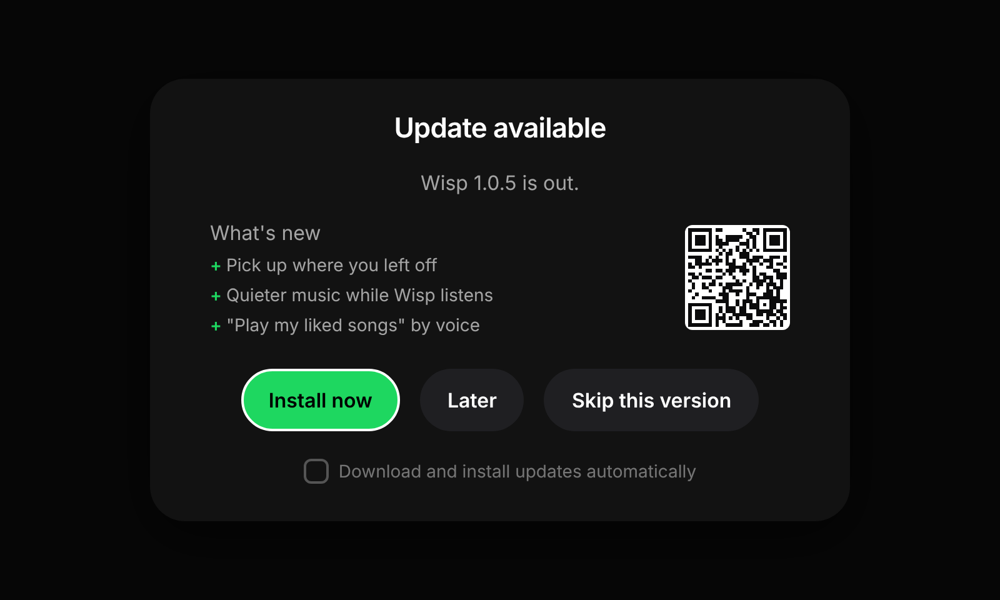

What's new · October 20, 2026
Wisp 1.0.7
Search for any address, Spotify that keeps playing, notifications that behave, and a Wisp that hears you out.

DirectionsSearch for any address
Pick Search on Where to? and type with the knob or the screen, say "Okay Wisp, take me to…" and pick from the matches, or type it in the Wisp app.
How it works ›

NotificationsA turn banner that gets out of the way
The next turn shows for 5 seconds, and again as you near it. Swiped away, it stays away until the next turn.
Directions ›

NotificationsStacked, and swipe any way
Several notifications pile up with the newest on top. Swipe them up, left or right. Their icons follow your accent colour.
Settings ›

UpdatesEverything that's new, on your phone
Scan the small QR code on the update card for the full What's new page.
Every update ›
New
- Search for any address. Where to? has a Search row: type with the knob (turn to a letter, press to type; turn back from A for the matches) or tap the keys. "Okay Wisp, take me to…" shows the matches to pick from when there's more than one. In the Wisp app, Find a place on the Car Thing sends an address you type on the phone.
- Spotify keeps playing while Maps is open. The Wisp app holds on to Spotify while it plays for the Car Thing, and starts it again if Android closes it mid-song.
- The turn banner gets out of the way. It shows for 5 seconds when a turn comes up and again as you near it. Choose 5 seconds, 10 seconds or until the turn in Settings → Navigation → Turn banner.
- Notifications stack, newest on top with a count, swipe away up, left or right, with icons in your accent colour.
- A small QR code on the update card opens the full What's new page on your phone.
Better voice
- Wisp hears you out. A pause mid-sentence no longer cuts you off.
- YouTube Music and SoundCloud, however you say it: "YouTube Music, play…", "play … on YT Music", even when it's misheard.
- Music turns right down while Wisp listens, to about a third, and back before Wisp answers.
Update the Wisp app too
Wisp app 1.0.6 (update it from inside the app) brings the phone parts: Spotify kept awake, the quieter music while Wisp listens, and Find a place on the Car Thing.
Every update ›